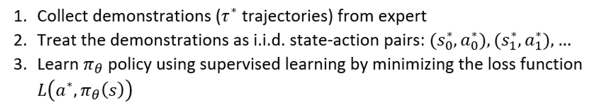
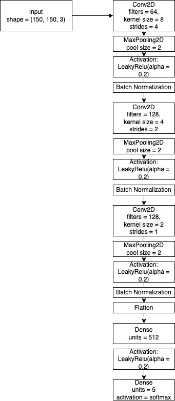
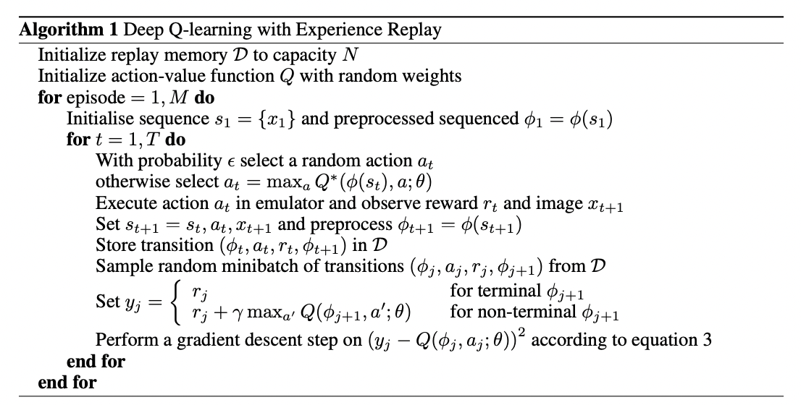
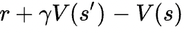
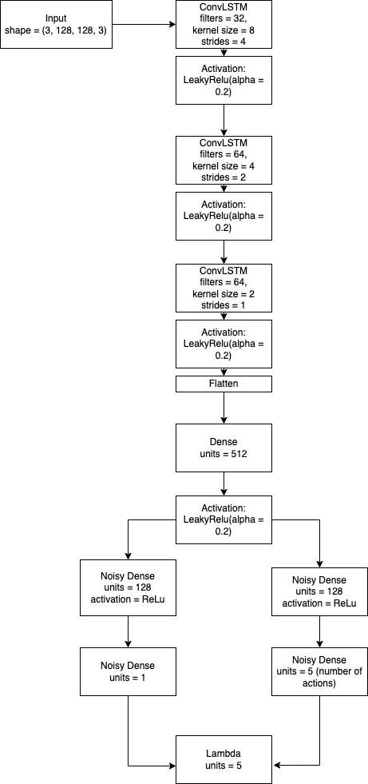

Subway Surfers AI
Using Imitation Learning and Reinforcement Learning, a system built to play the game Subway Surfers using game image pixels.
Introduction
The goal of this project is to build a machine learning agent capable of playing the mobile game Subway surfers.
Subway Surfers is a mobile game that was released in 2012 in Denmark. It is an endless runner video game where a player tries to escape from the inspector and his dog. The aim of the game is not to get caught in a railway and grab as many coins as possible. Trains and other objects create obstacles for a runner. To avoid a collision, a player can jump upon barriers and surf the hoverboards. The game is over when the character crashes into an obstacle, gets hit by a train, or is caught by the inspector with the dog. However, it’s possible to continue the game using special keys.
Methodologies
In this project, three (3) agents would be built in order to experiment different methods:
- Imitation Learning agent
- Reinforcement Learning agent
- IL + RL agent
Imitation Learning
Imitation learning is useful when it is easier for an expert to demonstrate the desired behaviour rather than to specify a reward function which would generate the same behaviour or to directly learn the policy.The simplest form of imitation learning is behaviour cloning (BC), which focuses on learning the expert’s policy using supervised learning which was used in this project. The algorithm is as follows:  Due to the lack of access of game variables and the difficulty of recreating the game, an andriod emulator was used to simulate the game experince by continuous screenshots. This implies that all agents would explicitly learn from game pixels.Architecture
Reinforcement Learning
Reinforcement learning, similar to its definition in cognitive science, is a branch of machine learning where the agent learns to complete a given task through trial and error. The learning happens solely based on the reward signal (or punishment) where the agent learns to maximize its future rewards. Reinforcement learning problems are usually formulated as a Markov Decision Process. In mathematics, a Markov decision process is a discrete-time stochastic control process. It provides a framework for modeling decision making in situations where outcomes are partly random and partly under the control of a decision maker.
Reinforcement learning problems are usually formulated as a Markov Decision Process. In mathematics, a Markov decision process is a discrete-time stochastic control process. It provides a framework for modeling decision making in situations where outcomes are partly random and partly under the control of a decision maker.
RL components
State
A screenshot of the current game screen (BlueStacks emulator).Action
Our agent has 5 actions available to execute (with keyboard press simulation). the actions are UP, DOWN, LEFT, RIGHT, and NOOP (execute nothing).Reward
Since the goal of this project is to make it as far as possible in the game, the reward function would simply be a -0.1 deduction for every frame survived. A seperate reward function was experimented with, which was a +0.5 reward for every coin collected by the agent which soweed little improvement compared the computational cost this adds.Algorithm
A couple algorithms were experimented with, namely:- Proximal Policy Optimization (PPO)
- Deep Q Networks (DQN)
- Advantage Actor Critic (A2C)
The winner algorithm was the DQN algorithm. Deep Q Network (DQN) is an algorithm developed by Deepmind that achieved superhuman level performance in atari games while only having access to just the screen pixels, just like humans. It uses a neural network to approximate the action-value function Q, the maximum expected return achievable from following any given policy, and uses the Bellman equation as an iterative update until it converges to the optimal state-value function. Each iteration is stored in a buffer called experience replay, it contains the state, action, reward, next state and a done flag (boolean indicating if the episode is over or not). Given the nature of the algorithm, it is only capable of handling discrete action spaces (e.g left, right, up down perfect for our use case).  An experience buffer is a storage system for the past transitions. As it gets full, we randomly collect samples the size of our batch size from the buffer, and these samples are used to train the agent. However over the years, there have been improvements to this system with each their own advantage. In this experiment, we would leverage the Prioritized Experience Replay (PER).
Prioritized Experience Replay: Ideally, we want to sample more frequently those transitions from which there is much to learn. As a proxy for learning potential, prioritized experience replay samples transitions with probability relative to the most recent encountered absolute TD error. Temporal Difference (T.D) can be calculated with this formula:  which can be interpreted as the difference between the gamma value (future reward discount) times the value estimation of the current state and the value estimation of thesame state plus the reward gotten from perfoming an action on the current state. This essentially models a "surprise transition" for the agent.
The DQN algorithm has since seen several improvements over the years such as:
- Double Deep Q Networks (DDQN): Uses 2 neural networks to estimate the state-value function to overcome the overestimation bias that comes from a single network used for action selection and evaluation. One network lags behind the other in weights update.
- Duelling Networks: An architecture that has two streams of computation, the advantage and value streams combined together by a special equation.
- Prioritized Experience Replay: Regular experience replay samples uniformly from the buffer but this improvement ensures we only sample transitions from which the agent has more to learn from.
- Noisy Networks: An extra layer added in our agents neural network, used to force our agent to explore more using factorised gaussion noise. This replaces the epsilon greedy algorithm (line 6-7 on the algorithm above).
- Frame stacking: Instead of our agent seeing just the current fram to make a decision, we stack the past n layers to feed to the model which essentially simulates the velocity of the agent and other objects.
Noisy Net implementation:
class NoisyDense(Layer):
'''
NoisyNet Layer (using Factorised Gaussian noise)
(Fortunato et al. 2017)
'''
def __init__(self, units=32):
super(NoisyDense, self).__init__()
self.units = units
def build(self, input_shape):
# Initializer of \mu and \sigma
mu_init = tf.random_uniform_initializer(minval=-1 * 1 / np.power(input_shape[1], 0.5),
maxval=1 * 1 / np.power(input_shape[1], 0.5))
sigma_init = tf.constant_initializer(0.5 / np.power(input_shape[1], 0.5))
# creating weights
self.w_mu = self.add_weight(
shape=(input_shape[-1], self.units),
initializer=mu_init,
name="w_mu",
trainable=True,
)
self.w_sigma = self.add_weight(
shape=(input_shape[-1], self.units),
initializer=sigma_init,
name="w_sigma",
trainable=True,
)
self.b_mu = self.add_weight(
shape=(self.units,),
initializer=mu_init,
name="b_mu",
trainable=True,
)
self.b_sigma = self.add_weight(
shape=(self.units,),
initializer=sigma_init,
name="b_sigma",
trainable=True,
)
def call(self, inputs):
p = self.sample_noise([inputs.shape[-1], 1])
q = self.sample_noise([1, self.units])
f_p = self.f(p)
f_q = self.f(q)
w_epsilon = f_p * f_q
b_epsilon = tf.squeeze(f_q)
# w = w_mu + w_sigma*w_epsilon
w = self.w_mu + tf.multiply(self.w_sigma, w_epsilon)
# w*x
ret = tf.matmul(inputs, w)
# bias
b = self.b_mu + tf.multiply(self.b_sigma, b_epsilon)
# y = w*x + b
return ret + b
@tf.function
def sample_noise(self, shape):
noise = tf.random.normal(shape)
return noise
@tf.function
def f(self, x):
return tf.multiply(tf.sign(x), tf.pow(tf.abs(x), 0.5))
Architecture
Training
The agent was trained locally on a single GPU. The training occured in real-time at 5 frames per second for a total of 100 hours until model convergence.Evaluation
| Agent | Max game time (10 runs) | Avg. game time (10 runs) |
|---|---|---|
| Imitation Learning Agent | 180 seconds | 147 seconds |
| Reinforcement Learning Agent | 115 seconds. | 101 seconds |